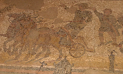

Византия


Становление самостоятельной Византии

Становление Византии как самостоятельного государства можно отнести к периоду 330—518. В этот период через границы на Дунае и Рейне на римскую территорию проникали многочисленные варварские, преимущественно германские племена.
Положение на Востоке было не менее тяжёлым, и можно было ожидать подобного же финала после того, как в 378 году вестготы одержали победу в знаменитой битве у Адрианополя, император Валент был убит и король Аларих подверг опустошению всю Грецию. Но вскоре Аларих ушёл на запад — в Испанию и Галлию, где готы основали своё государство, и опасность с их стороны для Византии миновала. В 441 году на смену готам пришли гунны. Их вождь Аттила несколько раз начинал войну, и лишь уплатой большой дани удавалось от него откупиться. В битве народов на Каталаунских полях (451) Аттила потерпел поражение, но спустя год напал на Италию; столкнувшись с сопротивлением жителей и эпидемией в своём войске, принял предложение римского папы Льва I о выплате дани и отступил[12].
Во второй половине V века опасность пришла со стороны остготов — Теодорих Великий разорил Македонию, угрожал Константинополю, но и он ушёл на запад, завоевав Италию и основав на развалинах Рима своё государство.